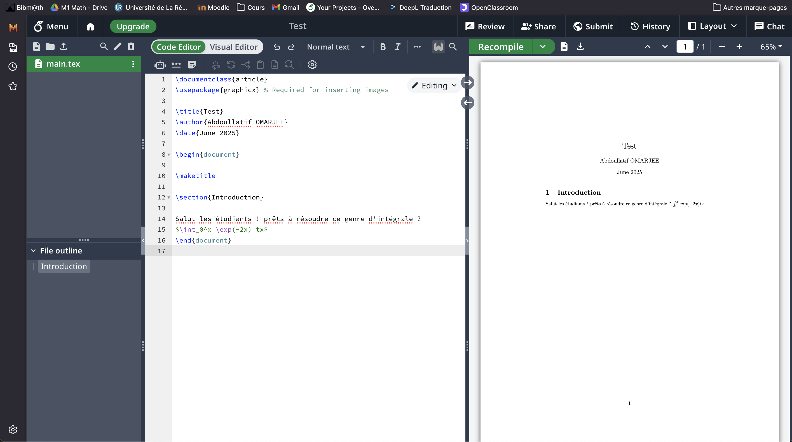

Ressources d'exercices d'entraînement
Sur cette page, l'idée est de référencer les meilleurs ressources d'exercices de mathématiques, et de voir comment écrire en Latex.
En licence, suivant les profils d'étudiants et de profs, il est parfois difficile à le fois de trouver des exercices spécifiques et de se contenter des TD des profs (même s'ils sont à certains égards très biens). Ou même simplement les emplois du temps ou les impératifs personnels font que l'on ne peut pas assister aux TD. Le meilleur site internet pour les licences, les classes préparatoires ou même les master est sans doute Bibmaths. Non seulement on y trouves des éléments de cours (propisitions-théorèmes et démonstrations), mais aussi un grand catalogue d'exercices corrigés et classifiés par niveau et par thème.
Ensuite, il existe évidemment plusieurs manière de prendre des notes de cours et de corrections d'exercices… quoi qu'il en soit, je vous recommande d'essayer d'écrire en Latex (ça se prononce "La-tèque").
C'est un langage de balisage qui permet d'écrire des formules mathématiques de manière simple et efficace, devenue la norme dans le milieu universitaire et très utilisé dans les interfaces de rédaction de documents scientifiques, y compris dans les markdown Jupyter ou R-Studio (voir les pages dédiées).
"balisage" signifie que l'on écrit du texte avec des balises pour indiquer la mise en forme, comme les titres, les sous-titres, les listes, les formules mathématiques, etc. Par exemple, pour écrire une formule mathématique en Latex, on utilise des symboles spéciaux pour indiquer les opérations et les variables.
Utilisation de Bibmaths
En cliquant sur le site, on voit sur la barre de navigation en haut à gauche, les différents niveaux d'études.
En cliquant sur Supérieur, on a le choix entre Math Sup, Math Spé, Capes, Agreg Interne et BTS. les différentes pages couvrent plus ou moins fidèlement le programme de chaque concours/ année de classe préparatoire.
Mais le plus intéressant reste l'onglet "Bibliothèques > Bibliothèques d'exercices" :
Les feuilles d'exercices sont classées par thèmes dans l'arborescence, et les feuilles commencent par des exercices simples et deviennent de plus en plus difficiles et catégoriques au fur et à mesure que l'on descend.
Il y a deux menus déroulants : le premier pour les indications et le second pour la correction des exercices.
Attention, parfois les corrections sont plus concises que détaillées, idem pour les indications.
Il est possible que certaines pages soient un peu "légères" en terme de contenu, auquel cas la seule solution est d'aller chiner des livres dans la bibliothèque universitaire ou en version numérique…
Aussi, dans le cas où vous avez de très grosses ambitions (comme passer l'agrégation, passer un concours…) vous aurez le même problème donc même solution que ci dessus ou alors penchez vous sur les annales de gros concours.
Écrire en Latex
Pour écrire en Latex, il existe plusieurs éditeurs en ligne, mais je vous recommande d'utiliser Overleaf, qui est un éditeur de texte collaboratif en ligne pour le langage LaTeX. Il permet de créer des documents scientifiques, des articles, des rapports et bien plus encore. Il est très utilisé dans le milieu académique et professionnel pour la rédaction de documents techniques et scientifiques.
Découverte de l'interface Overleaf

Quand vous démarrez un projet, vous avez un fichier main.tex qui est le fichier principal de votre projet. Simplement, vous pouvez créer d'autres fichiers .tex pour organiser votre projet,
par exemple un fichier pour chaque chapitre ou section de votre document puis l'inclure à n'importe quelle place en utilisant la commande \include{nom_du_fichier}.
Dans la capture d'écran ci-dessus, on voit que le fichier main.tex est ouvert dans l'éditeur de texte à gauche, et le rendu du document est affiché à droite.
La numérotation est automatique et se met à jour au fur et à mesure que vous ajoutez des sections et sous-sections.
Les formules mathématiques sont écrites entre des balises $...$ pour les formules en ligne, ou entre \[...\] pour les formules en bloc.
Dans mon petit exemple, "\int" désigne \( \int \), "_0^x" collé à l'intègre indique que l'on intègre de \(0\) à \(x\), et "\exp(-2x)" indique \( \exp(-2x) \).
Pour apprendre quelque symboles, il y a ce document qui est très utile, mais il y en a plein d'autres sur internet.
Vous pouvez évidemment vous aider de l'IA générative ou pour un symbole en particulier, le dessiner sur Detexify qui vous renverra le code Latex correspondant au symbole :
Effectivement il existe d'autres éditeurs de texte pour écrire en Latex, comme TeXstudio, TeXworks, ou encore Kile. Mais Overleaf est très pratique car il est en ligne et permet de collaborer facilement avec d'autres personnes.
Le défaut est qu'effectivement il stocke sur ses serveurs vos projets, lesquels ne sont pas infaillibles, donc si vous avez des projets importants, pensez à les sauvegarder régulièrement sur votre ordinateur ou sur un autre service de stockage en ligne.
MacOS : Latex sur Pages
Sur MacOS, vous pouvez utiliser l'application Pages (l'équivalent de Word sur Mac) pour créer des documents avec des formules LaTeX :
Sur la capture, je vais sur Insérer > Équation… et une petite fenêtre s'ouvre :
(Notez bien : le raccourci clavier indiqué option + command + E permet de l'ouvrir plus rapidement, vous allez devoir vous en servir souvent !)

Et vous pouvez écrire votre équation, laquelle s'insérera dans votre document au niveau du curseur de saisie.
Le Latex sur Pages ne propose pas toutes les bibliothèques de symboles et de commandes que l'on trouve dans Overleaf ou autre…
il n'empêche que Pages est assez sympa et permet d'éditer des documents plus beaux et moins normés que les documents LaTex classiques.
Dans une optique de prise de notes en cours ou autre, il est pratique et rapide à utiliser je trouve, mais ce n'est peut être pas l'avis de tout le monde.